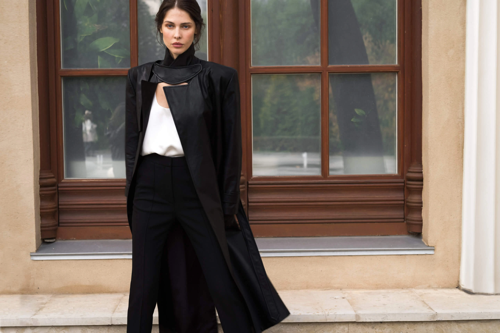
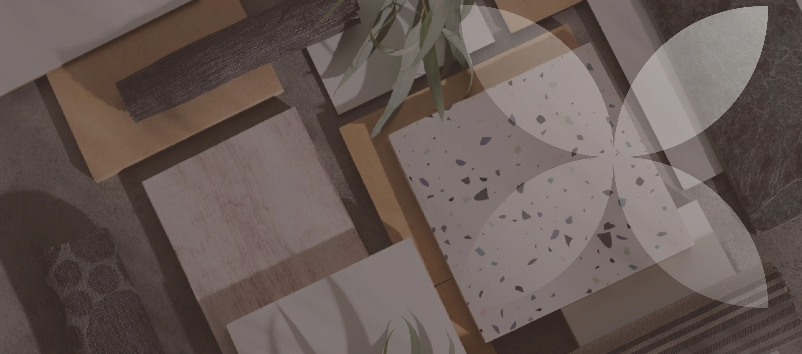
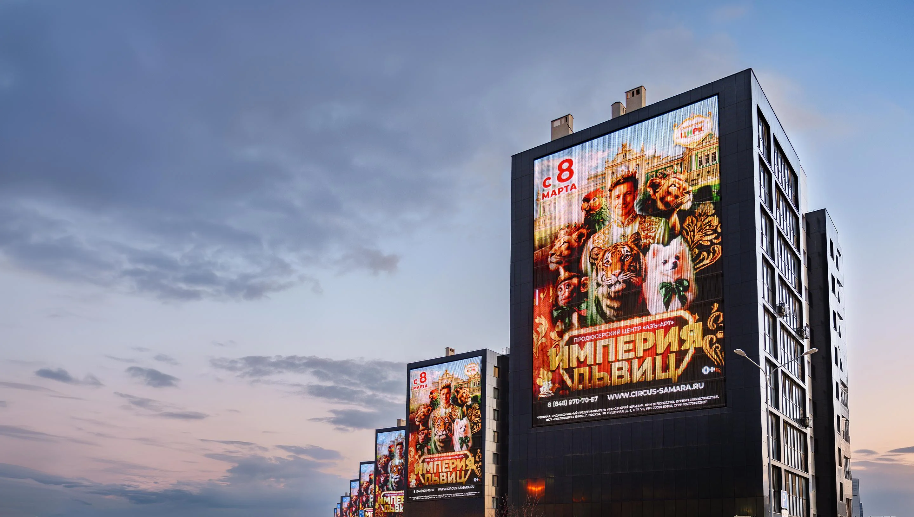
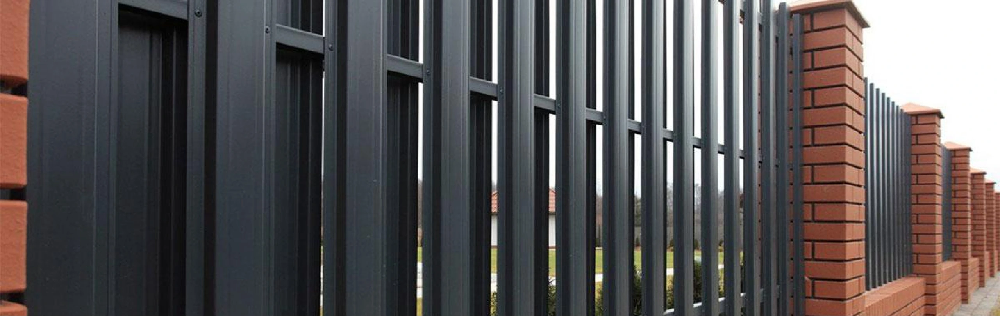

HTML-верстальщик
и Web-разработчик
Меня зовут Владислав. Более лет занимаюсь коммерческой веб-разработкой: создаю адаптивные интерфейсы по макетам, добавляю интерактивность с помощью JavaScript и работаю с существующими проектами.
В работе использую HTML5, CSS3, JavaScript, jQuery и Sass. Есть опыт работы с CMS Netcat, WordPress и Bitrix, а также технической SEO-оптимизации сайтов.
Сейчас развиваюсь в направлении Frontend-разработки и расширяю практический опыт работы с современными инструментами.
Я создаю интерфейсы, которые работают
За каждым макетом стоит задача, которую нужно решить. Я превращаю дизайн в адаптивные веб-страницы, уделяю внимание деталям, корректному отображению на разных устройствах и удобству использования.
Работаю не только с внешним видом страниц, но и с их интерактивностью: реализую пользовательские сценарии, обрабатываю события, работаю с DOM и подключаю API.
От макета до работающего сайта
Мне важно, чтобы готовая страница не просто напоминала макет, а корректно работала в реальных условиях.
Я занимаюсь адаптивной вёрсткой, реализую интерактивные элементы, интегрирую готовую вёрстку с CMS и дорабатываю существующий функционал. Также работаю с технической оптимизацией и помогаю развивать проекты после запуска.
Мой опыт позволяет смотреть на задачу шире отдельной страницы: учитывать особенности проекта, существующий код и дальнейшую поддержку сайта.
Проекты и задачи из коммерческой практики
Здесь собраны проекты, с которыми я работал, и задачи, которые решал в процессе разработки и поддержки сайтов. Каждый из них — это практический опыт работы с интерфейсами, функциональностью и реальными требованиями к веб-продукту.




Опыт, который помогает решать задачи
В веб-разработку я пришёл в 2018 году. Начинал с базовых задач и постепенно перешёл к самостоятельной работе над коммерческими проектами. Со временем стал заниматься не только вёрсткой отдельных страниц, но и более комплексными задачами — от работы с макетами до интеграции с CMS и последующей поддержки сайтов.
В мои основные задачи входили:
- Адаптивная вёрстка по макетам Figma и Photoshop.
- Интеграция вёрстки с CMS Netcat.
- Наполнение и доработка страниц.
- Работа с HTML, CSS, JavaScript и jQuery.
- Техническая SEO-оптимизация и улучшение сайтов.
- Поддержка и развитие существующих проектов.
Работа в веб-студии дала мне возможность получить опыт на разных этапах создания сайта. Я научился самостоятельно разбираться в задачах, учитывать требования проекта и доводить работу до готового результата.
Со временем мне стало интересно глубже разбираться в клиентской части веб-разработки. Поэтому я начал уделять больше внимания JavaScript, интерактивности интерфейсов и развитию навыков, необходимых для дальнейшего роста во Frontend.
Следующий этап работы был связан с крупным проектом-агрегатором и развитием уже существующего сайта. Мне приходилось дорабатывать готовые страницы, создавать новые интерфейсы и разбираться в логике работающего проекта.
Одной из интересных задач стало внедрение модуля бронирования. Пользователь мог выбрать продукт, доступные дату и время, дополнительные опции, а система рассчитывала стоимость бронирования. После оформления заявки информация отправлялась владельцу продукта, а пользователь получал письмо с подтверждением заявки.
Этот опыт помог мне лучше понять, как отдельные элементы интерфейса связаны с бизнес-логикой и пользовательскими сценариями.
Помимо основного проекта, я работал с другими сайтами и CMS, в том числе с WordPress и Bitrix. Также занимался поддержкой существующих решений, исправлением ошибок и доработкой функциональности.
Помимо основного проекта, я работал с другими сайтами и CMS, в том числе с WordPress и Bitrix. Также занимался поддержкой существующих решений, исправлением ошибок и доработкой функциональности.
Мне интересна долгосрочная работа над продуктом или проектами, возможность глубже погружаться в задачи и вместе с командой создавать качественные веб-интерфейсы.
| Web-студия ArtQb | HTML-верстальщик | Август 2018 |
| Интернет-агенство Конверсия | HTML-верстальщик | Декабрь 2025 |